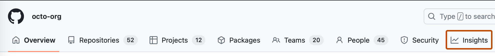

You can view metrics to monitor where your organization or repositories use GitHub Actions and how they are performing.
Note
There may be a discrepancy between the Workflows tab's job count and the Jobs tab's count due to differences in how unique jobs are identified. This does not affect the total minutes calculated.
In the upper-right corner of GitHub, click your profile picture, then click Organizations.
Click the name of your organization.
Under your organization name, click Insights.

In the "Insights" navigation menu, click Actions Usage Metrics or click Actions Performance Metrics.
Optionally, to select a time period to view usage metrics for, choose an option from the Period drop down menu at the top right of the page. For more information, see Viewing GitHub Actions metrics.
Click on the tab that contains the metrics you would like to view. For more information, see About GitHub Actions metrics.
Optionally, to filter the data displayed in a tab, create a filter.
Optionally, to download usage metrics to a CSV file, click .
Note
There may be a discrepancy between the Workflows tab's job count and the Jobs tab's count due to differences in how unique jobs are identified. This does not affect the total minutes calculated.
The time period selection feature allows you to view GitHub Actions metrics over predefined periods, as detailed in the following table. These metrics exclude skipped runs and those that use zero minutes. Data is presented using Coordinated Universal Time (UTC) days.
| Period | Description |
|---|---|
| Current week (Mon-Sun) | Data from Monday through the current day when the page is viewed. |
| Current month | Data from the first of the month to the current day when the page is viewed. |
| Last month | Data from the first day to the last day of the previous month. |
| Last 30 days | Data from the last 30 days to when the page is viewed. |
| Last 90 days | Data from the last 90 days to when the page is viewed. |
| Last year | Data aggregated for the last 12 months. |
| Custom | Data from a custom date range. The range can be up to 100 days including the start and end dates and go back as far as one year. |